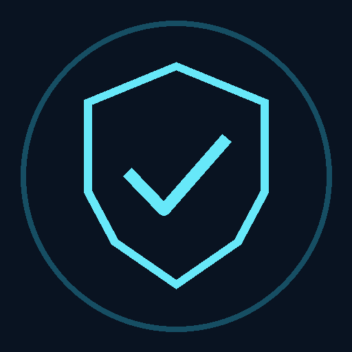

<!doctype html><html lang="en"><meta charset="utf-8"><meta name="viewport" content="width=device-width,initial-scale=1"><meta name="theme-color" content="#091321"><meta name="apple-mobile-web-app-capable" content="yes"><link rel="manifest" href="manifest.json"><link rel="apple-touch-icon" href="icon.png"><title>BETA Guardian</title><style>body{background:#091321;color:#e2e8f0;font:16px system-ui;margin:0}main{max-width:520px;margin:auto;padding:24px}header{text-align:center}h1{letter-spacing:9px}small{color:#67e8f9}nav{display:grid;grid-template-columns:1fr 1fr;gap:12px;margin:24px 0}button,a.action{background:#14283b;color:#b9eaf5;border:1px solid #38566b;border-radius:12px;padding:16px;font:inherit;cursor:pointer}section{background:#101e2e;padding:20px;border-radius:16px}a{color:#67e8f9}textarea{width:100%;box-sizing:border-box;background:#14283b;color:white;padding:12px;font:inherit}label{display:block;margin:12px 0}pre{white-space:pre-wrap;overflow-wrap:anywhere}footer{font-size:12px;color:#94a3b8;text-align:center;margin:24px 0}</style><main><header><h1>BETA</h1><small>GUARDIAN · PARTNER EDITION · v0.2</small></header><nav><button data-view="ai">AI Assistant</button><button data-view="emergency">Emergency</button><button data-view="scam">Scam Check</button><button data-view="privacy">Privacy</button><button data-view="check">Safety Check-in</button><button data-view="core">BETA Core</button></nav><section id="panel" aria-live="polite">Select a module.<p>အသုံးပြုလိုသော module ကို ရွေးပါ။</p></section><footer>INTELLIGENCE · RELIABILITY · PRIVACY · SAFETY<br>Prototype — no monitoring or automatic alerts</footer></main><script src="app.js"></script></html>
